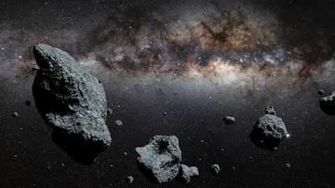

Asteroids

Asteroids, sometimes called minor planets, are rocky remnants left over
from the early formation of our solar system about 4.6 billion years ago.
The current known asteroid count is: 1,006,501.
Most of this ancient space rubble can be found orbiting the sun between Mars and Jupiter within the main asteroid belt.
Asteroids range in size from Vesta—the largest at about 329 miles (530 kilometers) in diameter - to bodies that are less
than 33 feet (10 meters) across. The total mass of all the asteroids combined is less than that of Earth's Moon.
Most asteroids are irregularly shaped, though a few are nearly spherical, and they are often pitted or cratered.
As they revolve around the sun in elliptical orbits, the asteroids also rotate, sometimes quite erratically,
\tumbling as they go. More than 150 asteroids are known to have a small companion moon (some have two moons).
There are also binary (double) asteroids, in which two rocky bodies of roughly equal size orbit each other, as well as triple asteroid systems.
| Sun | Planets | Moon | Dwarfplanets | Meteors | Comet |